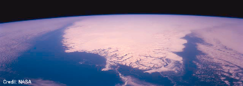

Simulation of rapid dynamical changes of the Greenland ice sheet in response to global warmingThe Greenland ice sheet is the second-largest land ice mass on the present-day earth, and its volume amounts to approx. 7.3 metres of sea level equivalent. The current mass balance of the ice sheet is most likely negative with an accelerating trend, even though the uncertainty is still significant. Surface melting increases strongly with rising surface temperatures, which makes the ice sheet very susceptible to future global warming. In addition, recent observations have led to strong concerns that ice-dynamical processes (basal sliding accelerated by surface meltwater, speed-up of ice streams and outlet glaciers) may boost the decay and thus lead to an additional contribution to sea level rise. In this project, the model Elmer/Ice, which is based on the open-source finite element software package Elmer and solves the full Stokes equations for glacial flow, was set up for the Greenland ice sheet. A new finite element mesh with a highly refined resolution in the critical areas of the major ice streams (Jakobshavn Ice Stream, North-East Greenland Ice Stream, Kangerdlugssuaq Glacier and Helheim Glacier) was created. Simulations were conducted from the present until 100 years into the future for the standardized scenarios provided by the SeaRISE community effort ("Sea-level Response to Ice Sheet Evolution"; http://tinyurl.com/srise-lanl, http://tinyurl.com/srise-umt). For comparison, the same experiments were also run with the shallow ice model SICOPOLIS. We found that the sensitivities of the models Elmer/Ice and SICOPOLIS are similar for the direct global warming scenario (ice sheet response mainly due to more negative surface mass balance), while the sensitivity of Elmer/Ice is about 3 times smaller than that of SICOPOLIS for the ice-dynamic scenario (doubled basal sliding assumed). We have submitted the results to the SeaRISE coordinators for being included in the multi-model assessment. For more details, please see the Final report, November 2010 (PDF). Project membersPrincipal investigatorDr. Ralf Greve Postdoctoral Research FellowDr. Hakime Seddik Research collaboratorsDr. Olivier Gagliardini Dr. Fabien Gillet-Chaulet Dr. Thomas Zwinger Research areaGreenland ice sheet
~ 60-82°N, 20-70°W
PublicationsSeddik, H., R. Greve, T. Zwinger, F. Gillet-Chaulet
and O. Gagliardini. 2012. Research funding organisationJapan Society for the Promotion of Science (JSPS). ---------- |